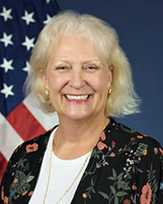
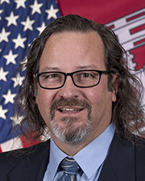

MEET OUR TEAM
Executive Secretariat
Organization - CMTS

Helen A. Brohl was appointed as the first Executive Director of the US Committee on the Marine Transportation System (CMTS) in July 2006 by US DOT Secretary Norman Mineta. Maritime transportation oversight and interest within the US Federal government is spread throughout many authorities, departments and budget line items. As a career Senior Executive, Ms. Brohl manages the CMTS partnership, established under Presidential Directive in 2004 and authorized in 2012, that joins over 25 Federal agencies to address our Nation's waterways, ports and intermodal connections. Working with senior political, military, and civilian leaders in the Federal government, Ms. Brohl directed the development and Cabinet-level approval of the first-ever National Strategy for the Marine Transportation System to improve the MTS for capacity, safety and security, environmental stewardship, resiliency, and financing.
During her tenure, the CMTS has engaged in a number of dynamic issues, including Federal infrastructure financing and investment, system performance measures, navigation technology integration and coordination, and integration of marine transportation issues into the President's Ocean Policy and National Export Initiatives. Ms. Brohl was directly instrumental in the development of the CMTS Strategic Action Plan for Research and Development in the MTS, the CMTS response to the National Ocean Policy, the CMTS National Strategy for e Navigation, and a marine transportation policy for the U.S. Arctic.
From March to September 2012, Ms. Brohl was detailed by USDOT Secretary Ray LaHood to the US Merchant Marine Academy (USMMA) in Kings Point, NY, to facilitate the development of the USMMA Strategic Plan 2012-2017, which was issued August 1, 2012.
For the previous ten years, Ms. Brohl was the Executive Director of the U.S. Great Lakes Shipping Association, where she worked with NOAA and Congress to build the Great Lakes Water Level Observation Network, a lakes-wide system of real-time water and atmospheric observations provided directly to the mariner. This quality-controlled system of measurements assists "boat drivers" in monitoring the conditions in which they must operate the vessel safely and efficiently.
She also previously served for six years as the President of the National Association of Maritime Organizations, directing the collaboration with US Customs and Border Protection (and legacy INS) and the US Coast Guard to develop the maritime operational regulations under the Marine Transportation Security Action of 2002 and related post-9/11 legislation. The outcome was the development of a joint "notice of arrivals" system between the two Federal agencies, which significantly eased the burden of increased reporting requirements in a post 9/11 environment.
Additionally, Ms. Brohl served four years as the national coordinator for the Marine Navigation Safety Coalition, which encompassed over 60 maritime-related companies. The Coalition successfully improved the 300-year backlog of charts and surveys for our navigable waterways, which resulted in a multimillion-dollar increase in funding to the National Ocean Service and reduction in backlog by 100 years. Ms. Brohl also served as the Director of Marketing and Government Affairs for the Illinois International Port of Chicago, where she developed a competitive new barge terminal to successfully address that growth niche market. In addition, she served as a key team member of the St. Lawrence Seaway Development Corporation, USDOT in the implementation of first-ever trade development missions to Europe, Scandinavia, and North Africa. Ms. Brohl was awarded a John Knauss Sea Grant Fellowship in 1983, where she served with Congress as professional staff with the House Merchant Marine and Fisheries Committee.
Ms. Brohl was appointed in 2010 and reappointed in 2014 by the Assistant Secretary of the Army for Civil Works as a Commissioner of the US Section of the World Association for Waterborne Transport Infrastructure, received the Secretary of Transportation Safety Award in November 2015, and was named Woman of the Year in Maritime for Policy by the Organization of American States in April 2016.
Ms. Brohl has a coastal geology degree from Florida Atlantic University in Boca Raton, Florida, and a Masters in Science from The Ohio State University in Columbus, Ohio, in Great Lakes Land and Water Use Policy. She is currently an alumni mentor with the John Glenn School of Public Affairs and sits on the board of the Women's Aquatic Network, which she co-founded 30 years ago. She is married and has two grown children.
Organization - USACE

Brian Tetreault is the Program Manager for the Marine Transportation System (MTS) for Headquarters, U.S. Army Corps of Engineers (USACE). In this role he also serves as Senior Advisor to the U.S. Committee on the Marine Transportation System (CMTS) and USACE Liaison to the U.S. Coast Guard. Prior to this position, he was a Navigation Systems Specialist at the USACE Engineer Research and Development Center, Coastal and Hydraulics Laboratory. He has worked on projects to develop and implement navigation information systems to improve safety, efficiency, and reliability of inland and coastal waterways. He has been a U.S. representative to national and international navigation-related bodies, including the World Association for Waterborne Transport Infrastructure (PIANC), International Association of Marine Aids to Navigation and Lighthouse Authorities (IALA), International Electrotechnical Commission (IEC), and the Radio Technical Commission for Maritime Services (RTCM). He is a graduate of the United States Coast Guard Academy and served in the Coast Guard for 22 years at sea and ashore.
Organization - NOAA

Ms. Heather Gilbert has worked for the National Oceanic and Atmospheric Administration (NOAA) for over 15 years. She currently serves as the NOAA Senior Advisor to the U.S. Committee on the Marine Transportation System (CMTS).
Prior to her role in the CMTS, Ms. Gilbert began her career at NOAA as a nautical cartographer with the National Ocean Service, Office of Coast Survey. From there she moved to NOAA's Homeland Security Program Office, where she served as the project manager for the internal Geographic Information System (GIS) and managed the agency-wide notification system. In her current role at the CMTS she works with the Future of Navigation Integrated Action Team (IAT) and leads task teams on Maritime Security and Maritime Transportation Extreme Weather.
Ms. Gilbert earned a Masters of Geographic and Cartographic Science from George Mason University and a Bachelor of Science in Environmental Geography from Ohio University. She also holds a Master's Certificate in Project Management. Ms. Gilbert, when not traveling or skiing, lives in Alexandria, VA.
Organization - NOAA
Michelle Carns is a senior advisor within the CMTS Executive Secretariat for the Supply Chain and Resilience teams. Before joining the CMTS in September 2022, Michelle worked within the U.S. Coast Guard's Vessel Response Plan program for the past 18 years. Using Federal Regulations as guidelines, she was one of ten that reviewed thousands of vessels to ensure their compliance. With compliance via an approval letter from the Coast Guard, these vessels were then allowed to transit U.S. waters. Michelle hopes to carry over her knowledge of vessel operations in her new position.
Organization - CMTS
Michael Heard Snow is an environmental attorney with a background in marine science and policy. He earned his B.S. in Environmental Science from Northeastern University in 2015, his M.Sc in Marine Systems and Policies in 2016, and his J.D. from William & Mary Law School in 2022, before being sworn into the State Bar of New Mexico.
Before law school he had the opportunity to join the first interdisciplinary oceanographic expedition to the Phoenix Islands Protected Area, Kiribati, in 2014; studied coral bleaching in the Maldives during the 2016 el nino bleaching event, and worked as a NOAA Fisheries Observer in the Bering Sea and Gulf of Alaska. Throughout law school he was exposed to a wide variety of environmental law and policy issues through externships and summer jobs at the Virginia Coastal Policy Centre, U.S. House Select Committee on the Climate Crisis, Earthjustice's Oceans Program, and the EPA's Office of Administrative Law Judges. In his free time he enjoys getting out of the city to explore national parks, seeking out new food, and volunteering at LGBTQ+ programs.
Organization - CMTS
Kelci Sundquist is the Executive Assistant to the Executive Director and Communications Coordinator for the CMTS. Her roles include managing CMTS social media, interagency meeting support, and developing and executing outreach strategies. Kelci completed her Master's Degree in Forensic Psychology in 2015; graduating from the University of Maryland, College Park in the spring of 2013 with a degree in psychology. When not traveling and spending time with friends and family, Kelci lives in Southern Maryland.
Staff Lead - CMTS Mariner Mental Health Working Group
Richard Edward Evoy is an occupational health epidemiologist with the National Institute for Occupational Safety & Health in the Western States Division. He is based out of the Anchorage, Alaska office. He earned his B.S. in Biology from Seattle Pacific University in 2014, his MPH in Environmental Health Sciences from Columbia University in 2016, and his PhD from Oregon State University in 2021.
He currently serves as the Staff Lead for the Mariner Mental Health Working Group. His research focuses on occupational health and safety in maritime industries, aviation, and Alaskan workers.
Staff Lead - Mariner Mental Health Working Group
Megan Harrington is the CMTS Fall 2022 Intern. Megan is a third-year student at The Ohio State University in Columbus, Ohio. She is studying international studies with a minor in public policy on a pre-law track. This fall, Megan is a John Glenn Fellow for Ohio State's Washington Academic Internship Program (WAIP). Megan is interning with the CMTS while simultaneously earning university credit. Megan is from a small town in Western New York near the city of Rochester. Megan also has worked as a Front-End Lead and Key Holder for a country store back home for four and a half years. In her free time, Megan enjoys traveling, skiing, and spending time with her grandma.
How To Get In Touch
Phone: (202) 366-3612
Committee on the Marine Transportation System
Office of the Executive Secretariat
U.S. Department of Transportation
1200 New Jersey Ave SE
Washington, DC 20590